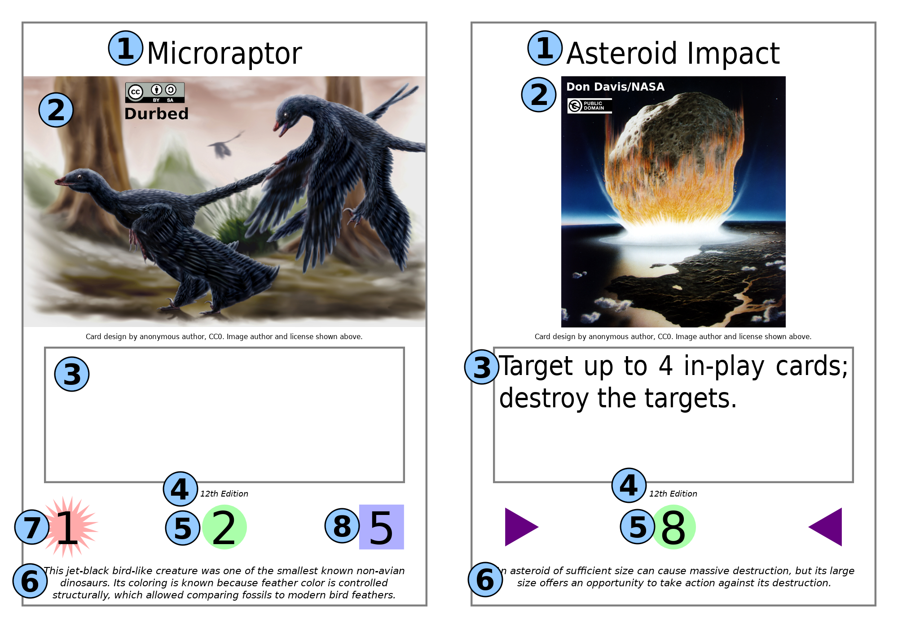

Rulebook (12th Edition)
Keeper of the Cards is a trading card game, loosely inspired by elements from various popular trading card games you may be familiar with. The primary distinguishing factor of Keeper of the Cards, however, is that you don't just trade cards; you create cards.
Unlike other trading card games, there are no official cards for Keeper of the Cards. Instead, there are official effect components that can be used for cards and official rules for calculating the cost of playing any given card. These rules are laid out separately in the Card Building Guide.
This document, on the other hand, serves to explain the rules of the game.
Contents
Card Types and Layout
There are 2 types of cards in Keeper of the Cards: minions, and spells. Here are some examples of both:
The card on the left is a minion, and the card on the right is a spell. They are visually very similar; the only noteworthy difference is that spells have a pair of triangles instead of the additional elements found on a minion.
The elements marked on the cards are:
- The name of the card. This is purely cosmetic and has no effect on the game.
- The card image. This is purely cosmetic and has no effect on the game.
- The ability text of the card.
- Edition Indicator indicating the edition of the game the card was designed for.
- The level of the card.
- The flavor text of the card. This is purely cosmetic and has no effect on the game.
- The SP of the card.
- The HP of the card.
Setup and Deck Building
Prior to starting a game of Keeper of the Cards, you must assemble a deck and (optionally) a reserves. The deck must contain 40–60 cards, while the reserves can contain up to 5 cards. All cards must look the same from the back (this can be achieved by using sleeves if necessary). Other than that, there are no restrictions on what legal cards you can put in your deck.
You can find preëxisting sets of example cards, as well as instructions for how to print them, in the Starter Set.
Before each game, shuffle your deck. Take the 5 cards from your deck and place them into your hand. You begin the game with 35 HP, which you can note on a piece of paper or thru some other counter.
You should have a reasonable amount of six-sided dice (preferably at least 10–20 dice), and some objects such as coins or poker chips to use as counters. You must also determine who goes first. One suggested method is for each player to roll 2 six-sided dice and for the player with the highest roll to go first.
Keeper of the Cards can be played by 2 or more players. There is theoretically no limit, but it is recommended to keep the number of players small, preferably between 2 and 8. In the case of a game with more than 2 players, each player works alone with their own HP and field.
Fields

Each player has a field: a designated area where cards are played, divided into several distinct zones which each have a specific purpose. Each zone's contents are classified as either public knowledge, in which case all players are entitled to know what cards are in the zone; private knowledge, in which case all players are entitled to know the number of cards in the zone, but only its owner is entitled to know what cards are in the zone; or restricted knowledge, in which case all players are entitled to know the number of cards in the zone, but no player (not even its owner) is entitled to know what cards are in the zone. The zones are as follows:
- Deck: Typically to the right of the trapfield. The contents of the deck are restricted knowledge.
- Graveyard: Typically to the right of the deck. Any card which is destroyed is immediately sent here, face-down. The contents of the graveyard are private knowledge.
- Reserves: Typically to the left of the trapfield. You can retrieve a card of your choice from your reserves instead of drawing a card from the deck, either when drawing a card during the Draw Phase or when drawing a card due to a card effect. The contents of the reserves are private knowledge.
- Battlefield: Typically above the trapfield. Contains its owner's in-play minions. The contents of the battlefield are public knowledge.
- Trapfield: Typically to the left of the deck. Contains its owner's in-play traps. The contents of the trapfield are private knowledge.
- Granary: Typically below the trapfield. Contains its owner's resources. The contents of the granary are private knowledge.
- Hand: Typically held in the hand. Contains the cards its owner currently has available to play. The contents of the hand are private knowledge.
Turn Order
Each turn in Keeper of the Cards consists of the following phases:
- Draw Phase: Draw 1 card. To draw a card is to take the topmost card from your deck, or alternatively, take any card of your choice from your reserves, and add that card to your hand.
- Special exception: on the first turn of the game, the player who goes first skips this phase.
- Resource Phase: You may optionally sow 1 resource. A resource is sowed by placing any card from your hand into the granary unexhausted (oriented vertically) and face-down.
- Action Phase: You may play any cards from your hand that you are able to, and you may also activate in-play minion abilities and in-play traps which have no activation condition. See Minions and Spells for more information.
- Battle Phase: You may do battle with your unexhausted minions. See Battles for more information.
- Recovery Phase: Every in-play card and every resource (for all players) is unexhausted. Every in-play minion has its SP, HP, and level reset to the respective values printed on the card (reversing any damage or stat changes due to card abilities).
Exhaustion and Recovery
Exhausted, for any card, means that the card cannot currently be used; this is marked by having the card in a horizontal (sideways) orientation. By contrast, unexhausted means that the card can currently be used; this is marked by having the card in a vertical (upright) orientation. To exhaust a card, rotate it to a horizontal orientation. To unexhaust a card, rotate it to a vertical orientation. Cards are only unexhausted during the Recovery Phase. (Players of Magic: The Gathering and some other games may recognize the exhaustion system as functionally identical to what those games call “tapping”.)
All cards inherently have a resource cost. To pay a card's resource cost is to exhaust a number of unexhausted resources in your granary equal to its level. For example, to pay the resource cost of a level 3 card, exhaust 3 of your currently unexhausted resources by turning them sideways.
During the Recovery Phase, all cards in every player's battlefield, trapfield, and granary are unexhausted. In addition, every minion in every player's battlefield has its SP, HP, and level returned to the respective values printed on it. This effectively reverses any stat changes that might have happened, including damage. As such, these stat changes effectively last only for the turn in which they take effect, even thô this is not explicitly stated in card effects.
Abilities
A card's abilities are indicated in the ability text. Each ability is composed of the following components in the following order:
- Ability name (minion abilities only): The name of the minion ability, designated with all capital letters. Has no effect on gameplay.
- Activation condition: Indicates when the ability can be activated, followed by a colon (:). If no explicit activation condition is present, the ability's activation condition is the standard activation condition, meaning it may be used only during your own Action Phase.
- Activation cost: Indicates a special cost paid upon activation of the ability, followed by an arrow (→). If you activate an ability you are unable to pay the activation cost for, the ability has no effect.
- Sub-abilities: Composed of an optional target selection, indicating what cards are treated as targets for the sub-ability, and 1 or more effects, indicating what the sub-ability does. Each ability can have any number of sub-abilities; each sub-ability is a separate sentence.
Abilities whose activation condition is met can be activated. The way to do this depends on card type, but once an ability is activated, perform the following steps.
- Immediately pay any activation cost. If you cannot, the ability fails. Otherwise, the ability becomes a chain link and either starts or continues a chain. (See Chains for more information.)
- Wait for the ability to resolve in the chain. When it does, do what every sub-ability says to do in sequence. If any effect is impossible as stated on the card text, it does nothing.
Many abilities make use of special keywords; see Keywords for a list of explanations for all of these keywords.
Minions
Minions are cards which are used to do battle and may also have special abilities. Minions must be summoned from your hand to the battlefield before they can be used, but once they are summoned, they can be used indefinitely as long as they remain on the battlefield.
To summon a minion, pay a number of resources equal to the card's level, and then place it, face-up and exhausted, into the battlefield. (See Exhaustion and Recovery for more information about resources and exhaustion.)
Minions can have any number of abilities. Each ability is designated on a separate paragraph, with a name indicated. To activate a minion ability whose activation condition is met, the minion must be in-play and you must exhaust it, unless the ability has ghost-play. After that, perform the steps described for activation of an ability in Abilities.
Additionally, minions have SP – the minion's capability for inflicting damage in battles; and HP – the minion's tolerance for taking damage. Damage is the reduction of a minion's HP by the given amount, followed by destroying the minion if its HP is less than or equal to 0. For example, if 8 damage is inflicted to a minion with 15 HP, that minion will have 7 HP left and not be destroyed. If 8 damage is inflicted to a minion with 8 HP, however, that minion will have 0 HP left and be destroyed. Note: it is possible for minions to initially have 0 HP; in such a case, any amount of damage will destroy the minion. Damage is central to battles, which all minions can participate in; see Battles for more information.
Minions can also hold counters; see Counters for more information.
Spells
Spells are cards that only have a single ability. Spells can be used in 2 ways: they can be cast from your hand, and they can be set as traps for use later.
To cast a spell whose activation condition is met, pay its resource cost, reveal the spell to all other players, perform the steps described for activation of an ability in Abilities, and then send the spell to the graveyard.
To set a spell as a trap, pay its resource cost, then place the card into the trapfield, face-down and exhausted. Only unexhausted traps can be activated. To activate a trap, turn it over to reveal it to all other players, perform the steps described for the activation of an ability in Abilities, and then send the spell to the graveyard.
Counters
Some abilities manipulate or utilize counters. A counter is a special marker which can be placed on an in-play minion (but not a trap or resource). Any available object can be used as a counter. Counters stay on the minion they are placed on until either the minion leaves the battlefield, or an ability removes them.
There are several different types of counters. Each type has a name and can be voluntarily removed to trigger a particular special effect. The following rules apply to all counters:
- These counters can be removed (and their effects triggered) literally at any time, that is to say, during any phase of any player's turn, even immediately after placing them, triggering the stated effect.
- With the exception of Dice Counters, removing a counter to trigger its effect starts a chain or, alternatively, you can remove a counter to trigger its effect in response to an existing chain. See Chains for more information.
- Removing counters for their effects does not require exhausting the minion it is on since the effect is that of the counter, not of the minion.
- The player who placed a counter is considered to be the counter’s “owner” and “controller” and is the one who can remove it for its effect, regardless of who the controller of the minion is. For example, if you place one of these counters on a minion controlled by an opponent, it is you who can then remove the counters to trigger the effect, and the opponent cannot do so. Note that this restriction only applies to the effect of the counter itself; there is no restriction on how any counter, including a counter with an effect, can be removed for an activation cost or by a card effect.
- For timing purposes, note that when an opponent activates an ability, that ability’s activation cost is paid and its target is selected immediately, meaning that e.g. you cannot remove counters for an effect to render an activation cost impossible unless you do so before the opponent indicates their intention to activate the respective ability.
Following is a list of counter types which are currently available, and an explanation of each one’s special effect (activated by removing the counter). Note: “the card” refers here to the card that the counter was removed from.
- Sword Counter: Increase the card’s SP by 1.
- Shield Counter: Increase the card’s HP by 5.
- Weakness Counter: Decrease the card’s SP by 1.
- Damage Counter: Roll a six-sided die and inflict damage to the card equal to the result.
- Exhaustion Counter: Exhaust the card.
- Dice Counter: Re-roll any 1 die (no matter who rolled the die initially).
- Unlike other counters, removing a Dice Counter to activate its effect does not start a chain and cannot be done in response to a chain; instead, the Dice Counter is removed at the moment a die roll happens that you want to re-roll. As a result, its usage can be hindered by effects that remove counters as long as those effects are timed correctly.
Chains
Due to activation conditions on abilities and the nature of how counters work, it is possible for multiple players to simultaneously be able to perform certain actions. Chains exist to clarify what exactly happens in these situations.
The following actions all start a chain:
- Activating a minion's ability (after paying the activation cost).
- Casting a spell (after paying its required cost).
- Removing a counter to activate its effect.
When a chain starts, the action which started the chain becomes the first chain link. Then, all players, starting with the player to the left of the player who started the chain and then going clockwise, are given an opportunity to respond to the chain in one of the following ways, creating an additional chain link instead of starting a new chain:
- By activating a minion ability or spell with an activation condition that has been met (immediately paying the activation cost).
- By removing a counter to activate its effect.
If any player decides to respond to the chain, all players are again given the opportunity to respond to the chain, this time starting with the player to the left of the player who last responded and then going clockwise. This process is repeated until all players decide not to respond to the chain.
Once all players are done responding to the chain, the chain begins resolving: in reverse order (starting with the most recent chain link and working backwards), each chain link's effects are actually executed, which is referred to as resolving the effects.
For example, when resolving a chain where chain link 1 is an ability with the effect, “Destroy the targets,”, and chain link 2 is the effect of a Weakness Counter, then resolution of the chain goes as follows:
- The effect of the Weakness Counter removed for chain link 2 resolves, decreasing the SP of the card it was on by 1.
- The effect of the ability activated for chain link 1 resolves, destroying the cards it targeted.
Only 1 chain can be active at a time, and no actions which start a chain can be performed while a chain is resolving. If the effects performed within a chain satisfy an activation condition of a minion ability or spell, said minion ability or spell can be activated after the chain finishes resolving, starting a new chain.
Battles
To battle, go thru the following steps (only during the attacking player's Battle Phase):
- Attack Formation: The attacking player exhausts any number of their unexhausted minions, which become the attacking team, and declares 1 victim: a player or a minion which the attacker wants to inflict damage to. Any given player or minion can only be declared as a victim once per Battle Phase. The player declared as a victim, or the controller of the minion declared as a victim, becomes the defending player. The attacking player selects and announces the formation order of the attacking team – the order in which these minions will take damage.
- Defense Formation: The defending player may exhaust any number of their own unexhausted minions (which may or may not include the victim itself), which become the defending team. If they do this, they then select and announce the formation order of the defending team.
- Damage Allocation: The attacking player rolls a number of six-sided dice equal to the total SP of the attacking team, and the defending player rolls a number of six-sided dice equal to the total SP of the defending team. Then, each player must take each of their rolled dice, 1 at a time (in any order), and inflict the result as damage to the next surviving minion in the other player's team (based on the respective formation order selected) until either all dice are used or all minions in the respective team are destroyed. If any of the attacking team's dice remain, inflict the total result of these remaining dice as damage to the victim. If the victim was a player and any of the defending team's dice remain, inflict the total result of these remaining dice as damage to the attacking player.
For the purposes of timing, everything which occurs in each step is considered to occur simultaneously. As such, any action which starts a chain cannot be taken during one of the steps and must wait until the respective step is completed.
During your Battle Phase, you may initiate as many battles as you want to as long as you have unexhausted minions remaining and valid potential victims remain.
Endgame
The game ends when any of the following endgame conditions are met:
- When all players have 0 HP.
- When all players but 1 have 0 HP.
- When any player is made to draw a card while their deck is empty.
- When all players agree that there is no reason to continue the game.
A player's HP cannot be be lower than 0. Until an endgame condition is met, players with 0 HP, referred to as zombie players, continue to play as normal. Zombie players can regain a chance at winning the game by gaining HP before an endgame condition is met.
Once the game ends, use the following criteria to determine the winner. For each criterion, if it designates a single player, that player is considered the winner. Otherwise, check the next criterion only with the players who passed the previous criterion. If all criteria fail to designate a single player, the game ends in a tie between all players who were designated by the criteria.
- The player who was not made to draw while their deck was empty.
- The player with the most HP.
- The player whose in-play minions' total combined levels is the highest.
- The player with the largest number of cards in their deck.
Keywords
This section lists common keywords used in card text, including any important nuances for said keywords.
Ability-targeted
A card is ability-targeted when it is selected as a target for any ability.
Attack
A minion attacks when it is selected and exhausted by an attacking player to include it in an attacking team.
Bounce
To bounce a card is to place it in its owner's hand.
Bury
To bury a card is to place it on the bottom of its owner's deck. When burying multiple cards at once, you choose the order.
Controller
The controller of a card is the player whose zone it is in, regardless of who its owner is. So for example, if you use an effect to summon an opponent’s minion, the owner of that minion is still your opponent (and therefore it gets sent to that player’s graveyard when destroyed, for example); but while it remains in your battlefield, you are its controller and can use it the same way as cards in your battlefield that came from your own deck.
When the controller of a card changes (as can happen with the hypnotize effect), its location is implicitly changed to the field of its new controller, in the zone it was in when its controller changed. For example, if a minion in the battlefield of player 1 is hypnotized and its controller changed to player 2, it is moved to the battlefield of player 2.
Counter
See Counters for an explanation of what counters are and how they work.
Damage
A minion is damaged when any amount of damage greater than 0 is inflicted to it.
Defend
A minion defends when it is selected and exhausted by a defending player to include it in a defending team.
Deploy
To deploy a card means to play it as if it was in your hand. This is optional for each deployed target. In other words, it means for each deployed target, you may (but are not required to) do one of the following:
- Summon the card (if it is a minion).
- Cast the card (if it is a spell).
- Set the card as a trap (if it is a spell).
Just as when playing the card normally, you must pay all usual costs, including any applicable activation costs for spells, and any minion summoned or trap set is placed onto the battlefield or trapfield exhausted.
Cards which are already in-play cannot be deployed and thus are excluded.
Destroy
To destroy a card is to cause it to be sent to the graveyard, just as if defeated by battle. This can be used to trigger effects which activate on destruction of a card.
Dice-heal
To dice-heal a player is to roll the indicated number of six-sided dice and increase their HP by the total indicated on the dice. For example, to 3-dice-heal a player, roll 3 six-sided dice; if the results of the dice are 4, 1, and 3, the player gains 8 HP.
Down-level
To down-level a card is to subtract the amount from the card's level. A card's level can never be less than 0.
The down-level effect persists for the card until the Recovery Phase, regardless of where the card was when it was down-leveled and where it moves to.
Draw
To draw a card is to take the topmost card from your deck, or alternatively, take any card of your choice from your reserves, and add that card to your hand.
Each
When the term each is used to refer to targets, it means that each target is affected separately, e.g. any decision required by the effect is made for each card separately (and thus can differ between them).
Excavate
To excavate cards is to pick them up from the top of your deck and see them as a part of a target selection. The cards picked up are referred to as excavated cards. The excavated cards are still considered to be within the deck in their original positions.
You must excavate only the exact number of cards indicated. If your deck currently has fewer cards than the number of cards the ability instructs you to excavate, no cards are excavated; thus, the ability in question cannot continue and has no further effect.
Exhaust
To exhaust a card means to turn it sideways. Conversely, to unexhaust a card means to turn it upright. Only in-play cards and resources can be exhausted.
Fatigue
To fatigue a card means to prevent it from being affected by the Recovery Phase until its controller's next turn. This means that it will not be unexhausted, and any stat changes remain in effect, until its controller's own Recovery Phase. This effect does not stack; if 1 card is fatigued twice in a turn(s) prior to its controller's turn, this has the exact same effect as fatiguing the card once in that same timeframe.
Ghost-play
Found in activation conditions, an ability with ghost-play can be activated regardless of where the card is and, for minions, does not require exhaustion.
Hypnotize
To hypnotize a card means to change the target's controller to a different player. For example, you could hypnotize a minion controlled by an opponent so that you control the minion instead.
Only in-play minions and traps can be hypnotized. When the hypnotize effect ends, the hypnotized card's controller is changed back to the controller it had prior to the hypnotize effect resolving.
In-play
The term in-play refers exclusively to non-destroyed minions in the battlefield, and unactivated traps. Minions cease being in-play the moment they are destroyed or otherwise moved to any location other than the battlefield. Traps cease being in-play the moment they are destroyed, activated, or otherwise moved to any location other than the trapfield.
Resources are never considered to be in-play under any circumstance. Additionally, spells activated from the Hand are not considered to be in-play at any point.
It
The term it within an ability refers to the ability's target. The term is used only in cases where the ability can only ever have a single target.
Owner
The owner of a card is always the player whose deck it originates from, regardless of who its controller is.
Reveal
To reveal a card is to show it to all players, including yourself.
See
To see a card or a zone means to look at the card/zone which is normally private or restricted knowledge, without showing any other player. For example, if you see your opponent's hand, they must allow you (and only you) to look thru and read all of the cards in their hand.
Self-bounce
To self-bounce a card is to bounce one of your cards as a cost. The text will specify which of your cards you are to self-bounce.
Self-bury
To self-bury a card is to bury one of your cards as a cost. The text will specify which of your cards you are to self-bury.
Self-destroy
To self-destroy a card is to destroy one of your cards as a cost. The text will specify which of your cards you are to self-destroy.
Self-exhaust
To self-exhaust a card is to exhaust one of your unexhausted cards as a cost. The text will specify which of your cards you are to self-exhaust.
Self-sheathe
To self-sheathe a card is to sheathe one of your cards as a cost. The text will specify which of your cards you are to self-sheathe.
Sheathe
To sheathe a card is to place it on the top of its owner's deck. When sheathing multiple cards at once, you choose the order.
Silo
To silo a card means to place it into its owner's granary, exhausted and face-down.
Target
Used as a verb, the word target instructs on how to select the targets of an ability. Used as a noun, target or targets refers to all cards which have been selected by the aforementioned target selection text. (All targeted cards remain targeted throughout execution of the ability, regardless of where they are. For example, while it wouldn't make much sense, it would be entirely possible and allowed for an ability to summon a minion and then destroy that same minion, even thô the minion's location changed when it was summoned.)
The same card cannot be selected as a target multiple times at once for a given ability activation. For example, if an ability instructs you to target up to 5 in-play cards, you must select 5 separate in-play cards; you cannot "stack" the ability's effect by targeting a single card multiple times.
Up to
Used in target selections, the phrase "up to" precisely means any integer between 1 and the indicated number (selected by the card's controller). For example, "up to 3" means the controller of the card chooses 1, 2, or 3. (Note: the number 0 cannot be selected; if there is no valid target, the ability has no further effect.)
You
As used in card text, you and yourself always refer to the player who is using the card in question, i.e. its controller or the player summoning or casting it, regardless of who its owner is. Similarly, your always refers to that player's field, and cards whose controller is that player.
Revised and Banned Cards
As the game develops, cards made for old editions become outdated and no longer valid in new editions. This section documents all such cases, as well as cases where card text modifications have been applied that retroactively change the behavior of previously designed cards.
Clean Slate Edition
12th Edition is considered to be a clean slate edition, meaning that any card not bearing an Edition Indicator, or any card whose Edition Indicator indicates an edition prior to 12th Edition, is automatically considered to be a banned card (meaning it cannot be used in a game).